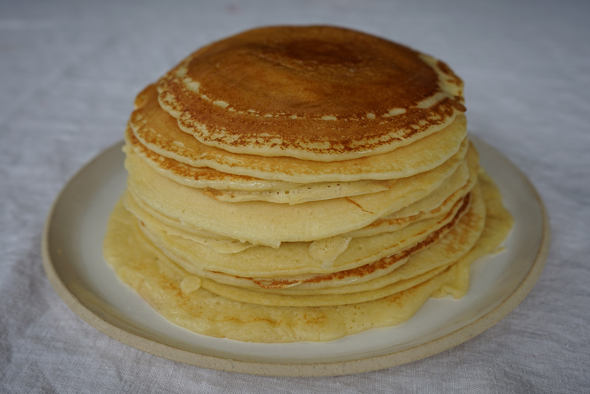

Blini

Description
This blinchiki or blini recipe is a popular Russian dish widely consumed during the Maslenitsa
festival. All kinds of sweet and savory fillings are possible. Don't worry if the first few don't
turn out right; you'll get the hang of it.
Ingredients
- 4 cups milk
- 5 large eggs
- 2 tablespoons white sugar
- 1/3 teaspoon salt
- 1/2 teaspoon baking soda
- 1/8 teaspoon citric acid powder
- 4 cups all-purpose flour
- 3 tablespoons vegetable oil
- 1 cup boiling water
- 2/3 cup butter, divided
Steps
-
Beat together milk and eggs in a large bowl until combined. Beat in sugar and salt. Mix in baking soda and
citric acid until incorporated. Blend in flour, a little at a time, until combined. Beat in oil.
Pour in boiling water, stirring constantly, until batter is thin and watery. Let rest for about 20 minutes.
-
Melt 1 tablespoon butter in a small frying pan over medium-high heat. Pick the pan up off the heat.
Pour in a ladleful of batter while you rotate your wrist, tilting the pan, so batter forms a circle and
coats the bottom. The blini should be very thin.
-
Return the pan to the heat. Cook blini for 90 seconds. Carefully lift up edge of blini to see if it's fully
cooked: edges will be golden and bottom surface should have brown spots. Flip blini over and cook
for 1 minute more.
-
Transfer blini to a plate lined with a clean kitchen towel. Continue cooking remaining batter, adding 1
tablespoon butter to the pan for every 4 blinis. Stack blinis and cover with another kitchen towel to
keep warm.
-
Spread desired filling in the center of each blini. Fold 3 times to make a triangle shape or fold up
all 4 sides, like a small burrito.